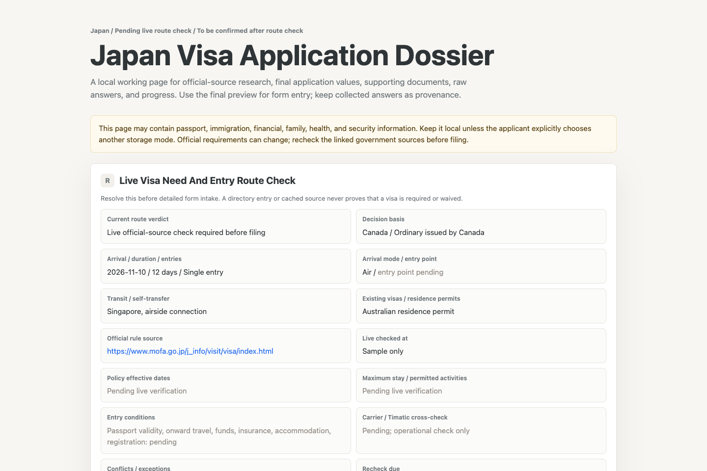

250
Destinations and areas
A searchable directory provides a starting point for global route research.
Research current entry rules across 250 destinations, prepare a reviewed application, and track every step in one local dossier.

250
A searchable directory provides a starting point for global route research.
41
Seed links help agents begin with government immigration and foreign affairs sources.
Always
No cached list becomes a visa verdict. Rules are checked again before filing and travel.
Visa Apply is an organizational and research tool, not legal advice. The issuing authority remains the final source of truth.
Entry rules depend on nationality, passport issuer, residence, destination, transit, purpose, and trip dates. Visa Apply checks those variables against current official sources before deciding what the applicant should do next.
The agent researches first, interviews second, and only fills an official form after the applicant has reviewed the dossier.
Verify current rules and identify the correct visa or entry path.
Official sources and dated verdict
Ask only the questions required for that destination and visa type.
Structured local dossier
Surface missing, uncertain, and conflicting details before submission.
Applicant-approved answers
Use an available browser or computer-control tool with user oversight.
Application or reference number
Record payment, appointment, biometrics, decision, and travel checks.
Current progress and next action
Run one command to install the skill. It works with any compatible agent environment.
npx --yes @yukioa2z/visa-apply